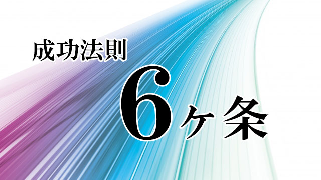

前回は、優秀な人はどんな人かと問い、それは人間関係能力すなわちヒューマンスキルの高い人であると話しました。（学力よりヒューマンスキルこそ育てたい）
今回はさらに角度を変え、社会に出てから成功しやすい人とはどんな人かについて話し、できれば子育ての参考の一つにしていただけたらと思います。
社会で成功するといっても、何をもって成功とするのかは人それぞれですし一概に「こうなれば成功」とは断定しにくいのは事実です。
いくら社会的地位が高くても、経済的に恵まれても家庭が崩壊していたり、病気や孤独感に苛まれていては充実感を得ることはできないからです。
ただ、個人的な事情をすべて考慮することはできない以上、ここではザックリと以下のように成功を定義したいと思います。
要するに公私とも満足のいく人生。幸せな人生ということになります。
そしてその幸せな人生を送るためには、学ばなければいけない能力、スキルというものがある。それが成功法則であるということです。
さて、その成功法則ですがどんなものでしょう。
細かいことを言えば50～100くらい項目を並べ立てることができますが、思春期～20代の若者でも身につけられるという点から私は思い切って次の6項目をあげたいと思います。
2.物事を「ありのまま」に見る
3.情熱と集中力
4.高い共感力
5.誠実さと実行力
6.知的好奇心と勉強意欲
DoよりもBeが大事なワケ
ところで、これらの項目についてお話する前に一つ大事な前提があります。
それは人が何かに立ち向かうときの基本的スタンスについてです。
多くの人は何かを成し遂げるには「行動」がもっとも大切だと思っています。行動しなくては何も始まらないというわけです。
その通り。行動なくして何も進展ありません。
しかし、行動は最終局面に起こるものであって行動が起こる前提として「心のあり方」がまず問われます。
たとえば勉強を例にあげると、やみくもに机に向かったり嫌々勉強しても効果は上がりません。スポーツの練習でも何でもそうですが、ただ与えられたメニューを受け身にこなすだけであったり、人の目を気にしてアリバイ的に行動したところで何の効果もないでしょう。
勉強ならば、漠然と様々なテキストを広げるのではなくどの教科のどの項目をまず征服したいのか、それが達成できたら次はどれを学ぶかを大体でも良いので分かっていなければなりません。
スポーツでも、多くの技量のうちで自分がいま一番身につけたいものは何で、そのためにはどんな練習が効果的なのかが分かっているのと分かっていないのとではパフォーマンス（効果）は格段に違ってきます。そしてできればその練習も苦しみながらやるのではなく楽しんでやれないか工夫してみる。
さらに自分の体調から得意不得意をよく観察し知っておく必要がある。
つまり行動の前段階としての心のあり方が重要だということです。
勉強ならテストで良い点を取るとか、入試合格。スポーツなら試合に勝つなど最終目標というものがあります。
それを意識したうえでそこに至るもっとも効率的な道筋、最短距離を瞬時にシミュレーションしイメージすることが、たとえ漠然としたものであっても大事です。
それができれば「行動」は、ある意味勝手に沸き起こるからです。しかもその行動には「質」が伴います。
私がいつもdoing（行動）よりもbeing（心のあり方）が大切と言っているのもそういう理由なのです。
その意味で1～6の成功法則は「行動」より「心のあり方」を中心に述べたものとなります。具体的な解説は次回にお話します。